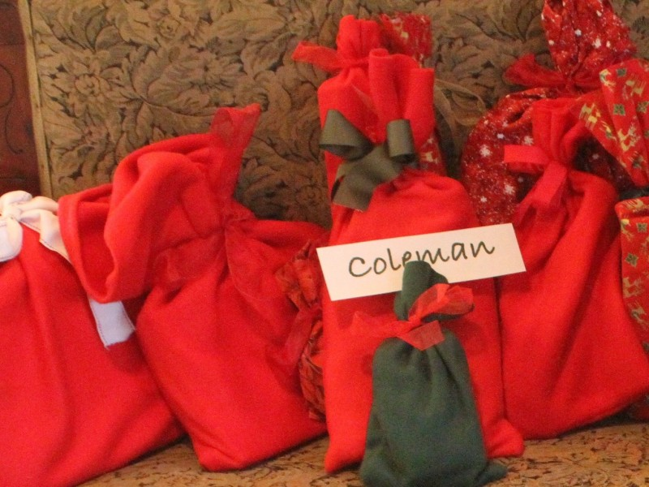

March 14, 2017
One Christmas in the bag and you’ll never go back!

Posting today from Virginia, where a late season snow storm makes it feel like Christmas. For as long as I can remember, Finley’s aunt Lynn has been saving paper by wrapping gifts in newspaper and other recycled materials. It took Santa a little longer to catch on, but finally about 9 years ago he starting leaving a stash of gifts wrapped in fabric bags on Christmas morning to delight the eyes of Finley and her brother and sister. The bags were tied up with reusable ribbons and each member of the family had their own color-coordinated holiday fabrics to identify their corner. Best of all, the big black trash bag and piles of wasted wrapping paper and boxes were not invited to our Christmas morning. Instead, a neat stack of fabric bags with ribbon inserted was put into a box, and the bags have reappeared every year since. If you are handy with a sewing machine, these bags are super easy to sew up. If not, you’ll find great sources on Etsy. Here is a link to sewing instructions as well as a link to other sustainable wrapping ideas!
http://so-sew-easy.com/fabric-gift-bags/
http://mashable.com/2015/12/02/gift-wrap-no-wrapping-paper/#Cg1Kqx0Zzgq9